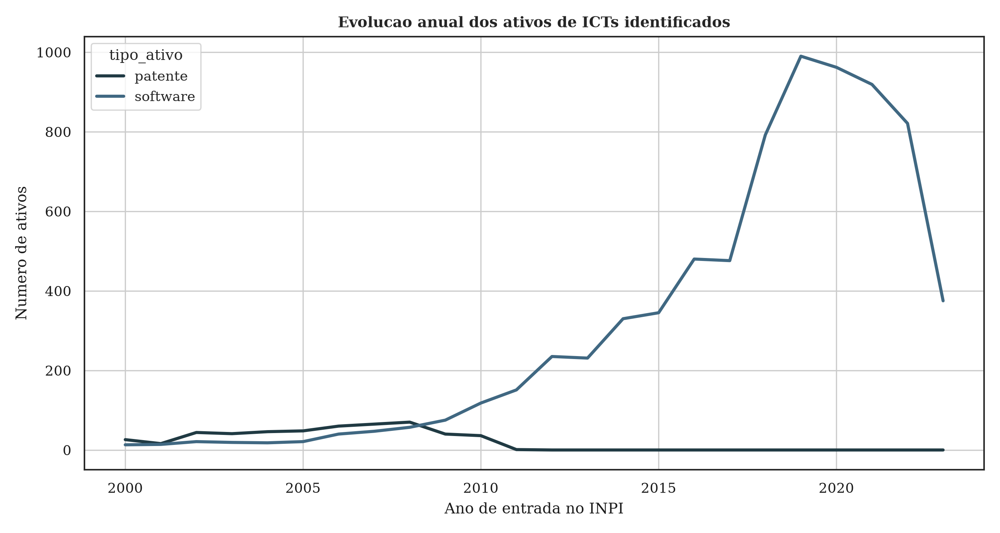
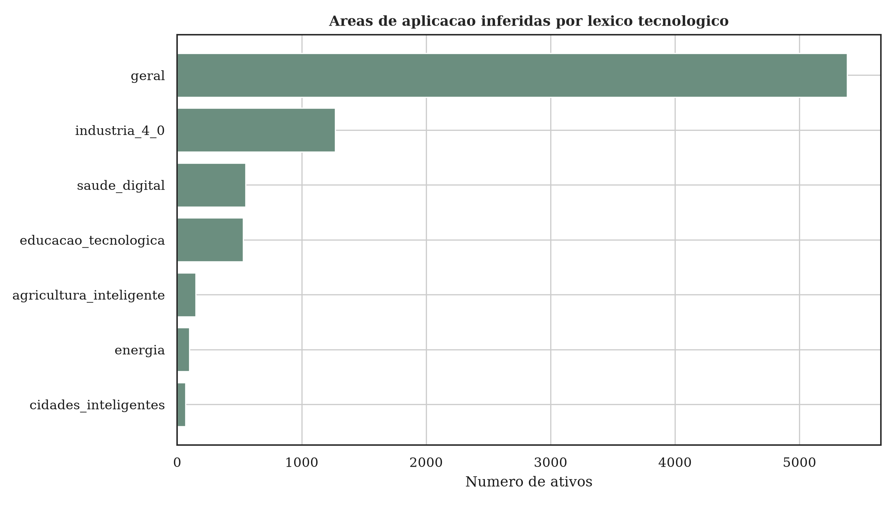
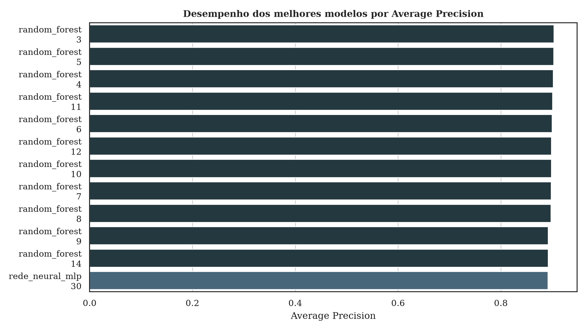
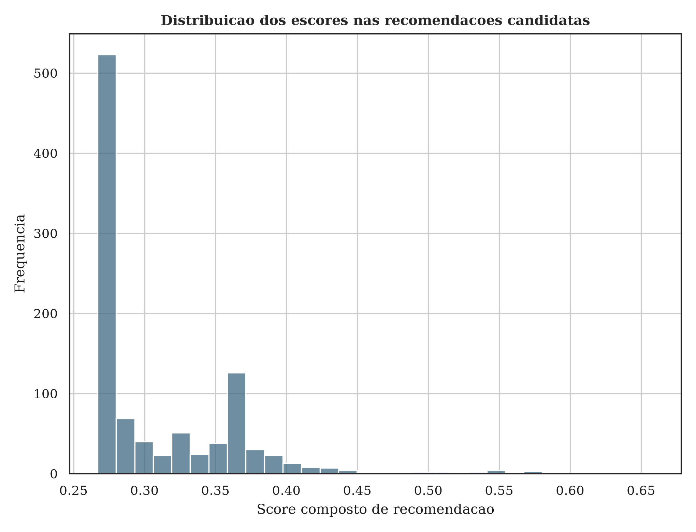
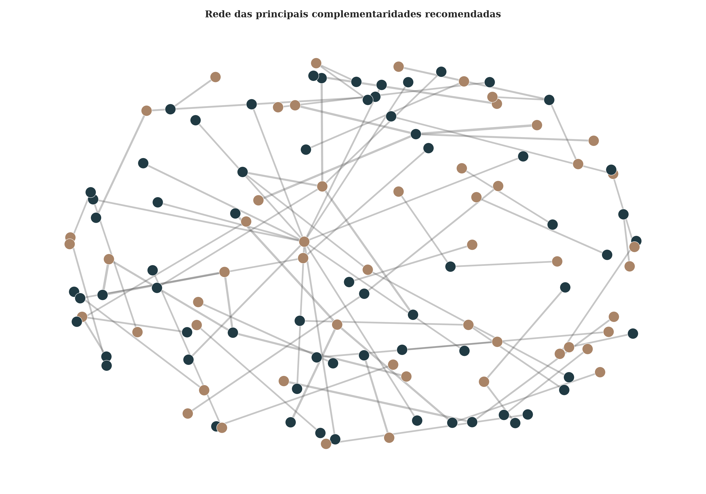

Como o sistema recomenda
A recomendação é o par patente--software ordenado pelo escore composto. O painel mostra a patente, o software recomendado e a justificativa computacional da complementaridade.
Patente de entrada
Invenção, processo, equipamento, sensor, método ou kit registrado por uma ICT.
Software sugerido
Programa que pode complementar a patente por diagnóstico, controle, medição, gestão, ensino, simulação ou aplicação digital.
Motivo da ligação
Mesma área, mesmo tópico, mesma ICT, similaridade textual, Jaccard e distância temporal explicam a sugestão.
Recomendar softwares para uma patente
Esta é a parte principal do sistema. Ao escolher uma patente, o painel apresenta os softwares mais bem ranqueados e a explicação de cada complementaridade.
Rede interativa das principais recomendações
Patentes aparecem em azul escuro e softwares em marrom. Clique em uma linha para identificar o par e ver os indicadores da complementaridade. A linha mais espessa indica maior escore.
Tabela completa de recomendações
Use os filtros para consultar os pares. A coluna de complementaridade descreve por que aquele software foi sugerido para aquela patente.
| Escore | Patente | Programa de computador | Complementaridade sugerida | ICT da patente | ICT do software | Indicadores |
|---|
Figuras do experimento




